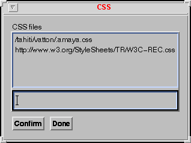

|
|
The Style menu allows you to change the appearance of your documents by two different means:
The first entries of the Style menu are dedicated to CSS, the last two entries to HTML elements.
Each of the first four entries of the Style menu call a
dialog box that allows associating a style attribute with the
currently selected elements:
In all these dialog boxes, Default buttons allow you to remove the corresponding style information from the selected elements.
All modifications made with these dialog boxes can be viewed immediately in both the Formatted view and the Structure view.
The width and height of any element in a document can be changed
interactively, in the same way as image map
areas. By pressing the Control key on the keyboard and the middle button
of the mouse, you can resize the box associated with the element under the
cursor. When you release the mouse button, the element size is changed and a
style attribute is associated with the element.
When the resized element is an image, this image is zoomed to fill its new box.
When a style attribute has been associated with an element,
you can use that element as a model for creating or modifying a style rule.
Select this element (you must select only one element and this element must
have a style attribute) and choose Create Rule
from the Style menu. A dialog box pops up that displays a
list of CSS selectors. This list comprises all classes that are defined for
the current document as well as, the element types to which some style is
associated.. Choose a selector in this list or enter a new class name or type
name and press the Confirm button. The style of the selected
element is then associated with the chosen selector and the style
attribute is removed from the selected element. Its content is moved to the
STYLE element, in the document HEAD, and all
elements matching the selector are displayed with the new style.
When you have created new classes with the Create Rule command, you can associate these classes with some elements in the document document. Choose Apply Class from the Style menu. A dialog box pops up which displays all existing classes. Choose one of these classes. The selected elements are then displayed with the style associated with the chosen class.
To associate a class with an element, you can also use the Attributes menu. This menu allows you to delete a class attribute from an element or to change it: the class attribute is handled like any other attribute.
The entry Style Sheets gives access to a set of commands which allows one to control external and User's preference CSS style sheets:
Commands Open, Disable and Enable can be applied to the User's preference style sheet, but commands Link and Remove concern only linked CSS style sheets. The following figure shows the list of CSS style sheets proposed for the command Open. If no CSS style sheet is currently applied to a document, a dialog box explains that there is "No CSS file available".

HTML provides some character-level elements that allow you to associate style with character strings. Two entries from the Style menu allow you to handle these HTML elements.
Item Information type from the Style menu
presents a submenu offering a choice of HTML elements that define abstract
styles. Select first a character string in your page and then choose an item
in this menu. The selected character string receives the corresponding style.
Three of these styles are also available through buttons: emphasis
( ), strong
(
), strong
( ) and
) and code
( ).
).
Item Character elements from the Style menu offers another menu for changing the style of text. The first entries of this menu could be replaced by CSS and should not be used. They are here only for the sake of completeness of the HTML 3.2 implementation.
To remove style from a character string, select the string first and re-apply the command that was used for associating the style you want to remove. All commands in the submenus Information Type and Character Element toggle themselves if re-applied.